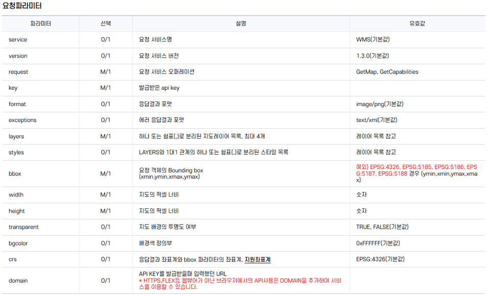
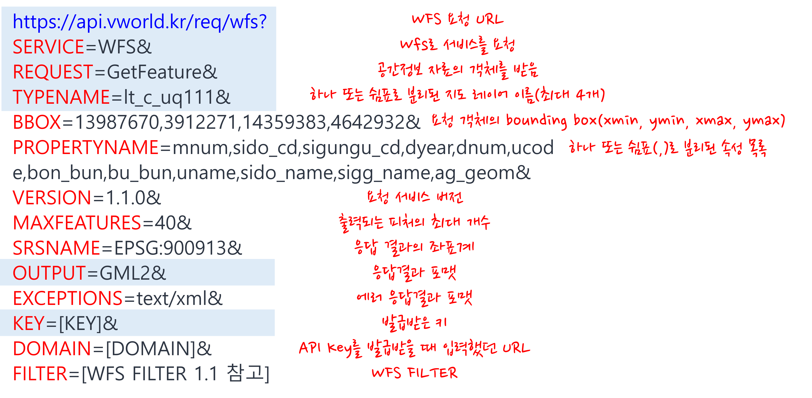

openAPI 사용방법
1. V-World WMS/WFS API
-
WMS/WFS API 2.0 레퍼런스
-
WMS(Web Map Service)와 WFS(Web Feature Service)를 통해 고품질의 공간정보 서비스를 제공
-
기본 요청 형태는 다음과 같고, 무슨 검색을 어떻게 할지를 설정하는 과정
- https://api.vworld.kr/req/wms?key=인증키&[WMS Param]
- https://api.vworld.kr/req/wfs?key=인증키&[WFS Param]
-
검색API 요청 파라미터는 레퍼런스 문서에서 참고

- WFS 예시는 다음과 같고, 기본 요청 형태는 key, service, request, typename, output으로 반드시 포함

-
2. WMS/WFS API 실습
-
Jupyter에서 WFS 요청하기 기본방법
- 설치된 라이브러리를 확인하고, 필요한 라이브러리를 호출한 후 API 호출
pip list: 설치된 라이브러리 확인pip install 라이브러리 이름: 라이브러리 설치import A: A라이브러리를 가져오라
예제 코드 보기/숨기기(클릭)
# request와 json 라이브러리 불러오기 ## requests는 웹 서버에 데이터를 요청하기 위한 가장 대중적인 라이브러리 ## json은 서버로부터 받은 JSON 형식의 데이터를 읽기 편하게 처리하기 위해 사용 import requests import json # 브이월드에서 발급받는 본인만의 인증 키 붙여넣기 API_KEY = "여기에_본인_API_KEY" # 브이월드의 서버 주소 url = "https://api.vworld.kr/req/wfs" # 일부 데이터를 들고 오려면 필터를 해야함 ## 필터는 반드시 문자열로 작성 filter_xml = """ <ogc:Filter> <ogc:PropertyIsLike wildCard="*" singleChar="_" escapeChar="\\"> <ogc:PropertyName>addr</ogc:PropertyName> <ogc:Literal>*강남*</ogc:Literal> </ogc:PropertyIsLike> </ogc:Filter> """ # 어떤 데이터를 어떻게 보여달라고 요청하는 핵심 파라미터 설정 params = { "service": "WFS", "version": "1.1.0", "request": "GetFeature", "key": API_KEY, # 응답결과 파일 포맷(GML2, GML3, application/json, text/javascript) "output": "application/json", # 레이어 리스트를 보고 레이어명 입력(최대 4개) "typename": "레이어 리스트 참고", "srsname": "EPSG:5180", "filter": filter_xml } # 설정한 URP과 파라미터를 조합해 요청을 보냄 response = requests.get(url, params=params) # 서버로부터 받은 JSON 형식의 응답을 Python 딕셔너리 형태로 변환 data = response.json() data - 설치된 라이브러리를 확인하고, 필요한 라이브러리를 호출한 후 API 호출
-
API 호출결과 파일 저장
- QGIS로 넘기려면 파일이 필요한데 JSON 또는 csv(엑셀에서 열 수 있는 표 형식)로 저장
예제 코드 보기/숨기기(클릭)
# vworld_wfs.geojson으로 저장하는데 쓰기모드(w), 한글이 깨지지 않도록 인코딩 설정 ## 위에서 저장한 파일은 열고(with open) f라는 이름으로 부름(as f) ## json.dump는 파이썬의 딕셔너리나 리스트 형태인 data를 JSON 형식의 문자열로 변환하여 파일(f)에 바로 기록하는 함수 ## ensure_ascii=False라는 옵션이 없으면 한글이 유니코드로 저장(한글로 저장하기 위해 설정) with open("vworld_wfs.geojson", "w", encoding="utf-8") as f: json.dump(data, f, ensure_ascii = False) - QGIS로 넘기려면 파일이 필요한데 JSON 또는 csv(엑셀에서 열 수 있는 표 형식)로 저장
-
Maxfeatures 파라미터 관련 에러
-
저장된 데이터는 총 객체가 1,000개만 저장되어 있는데 data를 보면 totalFeatures가 39,088개로 일부만 저장됨
- WFS API 요청은 maxFeature 파라미터의 기본 값이 1,000, 최소값이 1, 최대값이 1,000으로 설정됨
-
한 번에 가져올 수 있는 데이터의 양이 제한되어 있기 때문에 페이지네이션(pagination) 필요
- 여러 번 나누어 호출하여 전체 데이터를 수집하는 방법
- 여러 번 나누어 호출하여 전체 데이터를 수집하는 방법
-
V-World 정책상 startIndex를 1000개 이상으로 늘릴 수가 없으므로 루프를 통한 자동 수집은 불가능
- maxFeatures도 테스트 해 본 결과 1,000개 이상으로 늘릴 수가 없으므로 사실상 필터 조건을 지역별로 세분화해서 돌리는 방법 밖에 없음
-
-
참고(GML 파일로 요청했을 때 수정코드)
예제 코드 보기/숨기기(클릭)
import requests API_KEY = "여기에_본인_API_KEY" url = "https://api.vworld.kr/req/wfs" params = { "service": "WFS", "version": "1.1.0", "request": "GetFeature", "key": API_KEY, "output": "GML2", # GML 형식 요청 # 레이어 리스트를 보고 레이어명 입력 "typename": "레이어 리스트 참고" } # 1. 요청 보내기 response = requests.get(url, params=params) # 2. 데이터 가져오기 (json() 대신 text 사용) # GML은 텍스트 형태의 문서이므로 .text를 사용해야 에러가 나지 않습니다. data = response.text # 3. 파일로 저장하기 # json.dump 대신 일반 파일 쓰기 방식(f.write)을 사용합니다. with open("vworld_wfs.gml", "w", encoding="utf-8") as f: f.write(data)
3. QGIS에서 결과 확인
-
결과 파일 레이어 추가하는 방법
-
탐색기를 이용해서 결과 파일이 있는 위치에서 파일을 더블클릭하면 레이어 목록에 추가됨
-
메뉴에서 레이어 > 레이어 추가 > 벡터 레이어 추가하면 레이어 목록에 추가됨
-